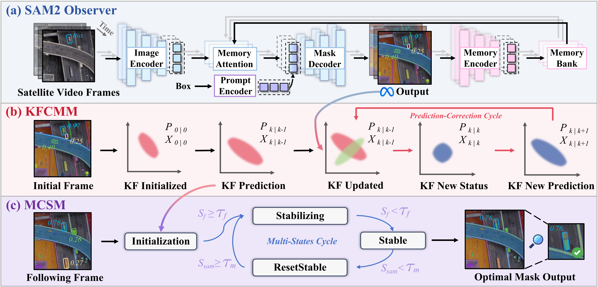
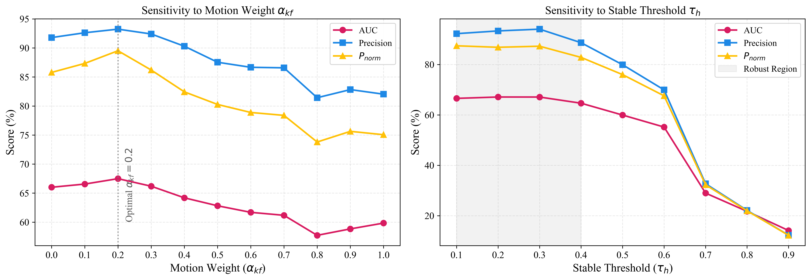

SatSAM2: Motion-Constrained Video Object Tracking in Satellite Imagery using Promptable SAM2 and Kalman Priors
2Tsinghua Shenzhen International Graduate School, Tsinghua University, Shenzhen, China
Abstract
Existing satellite video tracking methods often struggle with generalization, requiring scenario-specific training to achieve satisfactory performance, and are prone to track loss in the presence of occlusion. To address these challenges, we propose SatSAM2, a zero-shot satellite video tracker built on SAM2, designed to adapt foundation models to the remote sensing domain. SatSAM2 introduces two core modules: a Kalman Filter-based Constrained Motion Module (KFCMM) to exploit temporal motion cues and suppress drift, and a Motion-Constrained State Machine (MCSM) to regulate tracking states based on motion dynamics and reliability. To support large-scale evaluation, we propose MatrixCity Video Object Tracking (MVOT), a synthetic benchmark containing 1,500+ sequences and 157K annotated frames with diverse viewpoints, illumination, and occlusion conditions. Extensive experiments on two satellite tracking benchmarks and MVOT show that SatSAM2 outperforms both traditional and foundation model-based trackers, including SAM2 and its variants. Notably, on the OOTB dataset, SatSAM2 achieves a 5.84% AUC improvement over state-of-the-art methods. Our code and dataset will be publicly released to encourage further research.
Method

KFCMM
Kalman Filter-based Constrained Motion Module
Encodes satellite-domain physical constraints — approximate scale invariance and near-linear target motion — into a Kalman-based motion model. KFCMM provides predictive bounding-box prompts during occlusion and suppresses trajectory drift, distinguishing it from generic Kalman filter approaches used in prior trackers.
MCSM
Motion-Constrained State Machine
Regulates the tracker's internal state by jointly evaluating segmentation confidence and Kalman motion reliability. MCSM dynamically selects between SAM2-driven segmentation and motion-guided propagation, enabling graceful recovery from occlusion and large displacement events without retraining.
MVOT Benchmark
To support large-scale evaluation of satellite video trackers, we introduce MatrixCity Video Object Tracking (MVOT) — a large-scale synthetic benchmark built upon the MatrixCity Unreal Engine pipeline.
MVOT is generated with fixed aerial camera heights and diverse pitch angles, providing controlled variation in viewpoint, illumination (simulated via Unreal Engine sunlight parameters), and occlusion. The benchmark includes a dedicated MVOT-Occlusion subset with 109 occlusion events per 1,000 sequences (versus 11 in OOTB and 21 in SatSOT), making it the most occlusion-rich evaluation environment for satellite video trackers. The data generation pipeline and annotations will be publicly released.
Results
Qualitative Comparison

Fig. 2. Tracking comparison on satellite sequences. SatSAM2 maintains accurate localization under occlusion and clutter where baselines drift or lose track.

Fig. 3. KFCMM analysis. The Kalman estimator predicts target position during occlusion, enabling SAM2 to resume without manual re-initialization.

Fig. 4. Ablation study. KFCMM and MCSM each contribute incrementally; the full SatSAM2 achieves best results on all benchmarks.
Tracking Demonstrations
Sequence car_05 — stable mask on small vehicle target.
Sequence car_30 — MCSM recovers correctly after brief occlusion.
Sequence car_10 — Kalman prior suppresses drift under illumination change.
Sequence train_05 — generalizes to elongated targets without retraining.
Sequence train_08 — robust through partial occlusion by scene geometry.
Quantitative Results
SatSAM2 is evaluated on two public satellite video tracking benchmarks (OOTB / SatSOT) and the proposed MVOT benchmark. All baselines are reproduced with official code on the same hardware (NVIDIA GeForce RTX 3090).
OOTB / SatSOT Benchmark
| Method | Type | AUC (%) | P (%) | Pnorm (%) |
|---|---|---|---|---|
| DiMP-50 | Supervised | 46.86 | 57.20 | 46.01 |
| KYS | Supervised | 48.27 | 59.00 | 47.53 |
| SAM2 | Foundation | 48.06 | 76.14 | 74.60 |
| SAMURAI | Foundation | 41.95 | 67.99 | 65.85 |
| SatSAM2 (Ours) | Foundation | 54.15 | 78.63 | 76.37 |
SAT-MTB Benchmark
| Method | Type | AUC (%) | P (%) | Pnorm (%) |
|---|---|---|---|---|
| RTS | Supervised | 50.74 | 58.22 | 50.23 |
| SAM2 | Foundation | 51.11 | 59.57 | 50.79 |
| SAMURAI | Foundation | 51.29 | 59.51 | 51.01 |
| SatSAM2 (Ours) | Foundation | 54.72 | 66.16 | 54.48 |
Computational Efficiency (RTX 3090)
| Method | FPS | GPU Mem (GB) |
|---|---|---|
| SAM2 | 14.84 | 1.524 |
| SAMURAI | 14.53 | 1.536 |
| SatSAM2 (Ours) | 14.45 | 1.551 |
SatSAM2 introduces only marginal computational overhead (+0.015 GB GPU memory) over SAM2.
BibTeX
@inproceedings{Fan2026SatSAM2,
title = {SatSAM2: Motion-Constrained Video Object Tracking in Satellite
Imagery using Promptable {SAM2} and Kalman Priors},
author = {Fan, Ruijie and Ye, Junyan and Chen, Huan and
Huang, Zilong and Wang, Xiaolei and Li, Weijia},
booktitle = {Proceedings of the IEEE/CVF Conference on Computer
Vision and Pattern Recognition (CVPR)},
year = {2026},
eprint = {2511.18264},
archivePrefix = {arXiv}
}